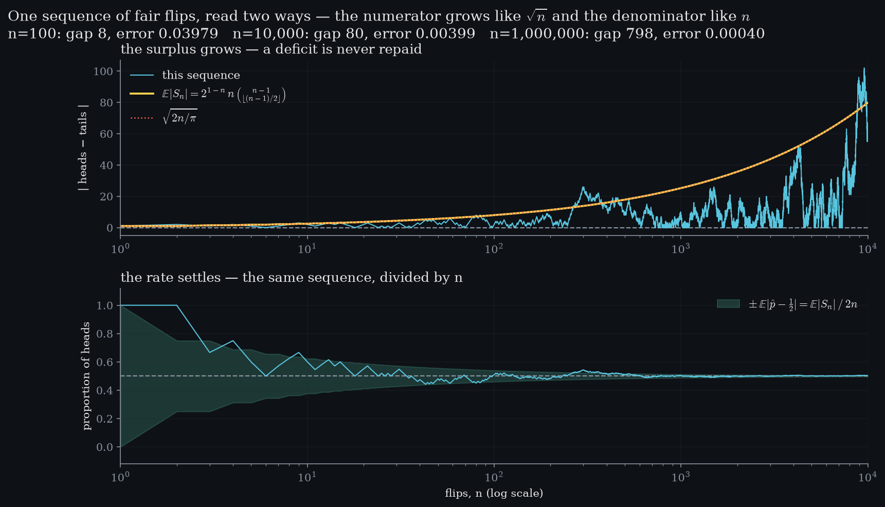
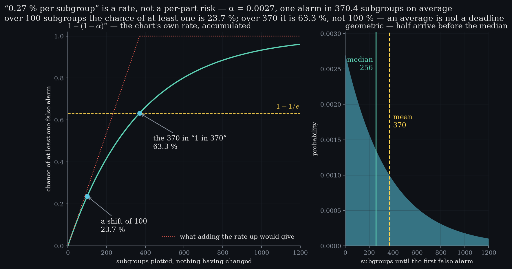

Level 2 · chapter two
Chance
A proportion is a long-run frequency. Before a chart may claim 99.73 %, this is what such a number is a statement about.
after Level 1 — variation, and a shape nobody chose·leads to Level 3 — centre and spread
- 2.1A long-run frequencya proportion describes a process, never the next part
- 2.2The gap grows, the rate settlesone sequence read twice — there is no law of averages
- 2.3The coin has no memoryindependence, shown as an absence
- 2.4Expectationa balance point the die does not have
- 2.5What a percentage claims — and why 370 is not a deadline
A long-run frequency
Level 1 ended with a shape nobody chose. the claim aheadLevel 6 prices a pair of limits at 99.73 %. This level earns the right to say it.Putting a number on that shape means saying something like “99.73 % inside”, and before this curriculum is allowed to say it, it has to be honest about what such a number is a statement about.
Flip a fair coin once and the proportion of heads is nought or one. not a propertyA probability describes a repeated process, never the next trial.No single flip is ever half a head. Flip it again and again and the proportion goes wherever the flips send it — and then it stops wandering, and settles.
That settling is the definition. spoken · 0:31“A probability is a long-run frequency — a statement about what a repeated process does.”A probability is a long-run frequency: a statement about what a repeated process does, and never a statement about the next part off the machine.
The gap grows, the rate settles
The belief worth killing lives here. the surplus, expectedat n = 100gap 8at n = 10,000gap 80at n = 1,000,000gap 798If heads are behind, are they owed? Read one sequence of flips two ways at once and the answer is exact rather than rhetorical.
Above, the surplus of heads over tails. no repaymentThe expected surplus never returns toward zero. There is nothing to repay it.It climbs, and it has an exact expected size — , which for any n worth plotting is . A hundredfold in n multiplies it by ten.
Below, the proportion, from the same flips. error in the rateat n = 1000.03979at n = 10,0000.00399at n = 1,000,0000.00040Its error is that same quantity divided by the number of flips, so the same hundredfold divides it by ten. Root n in the numerator, n in the denominator.
There is no law of averages. Nothing is owed and nothing is repaid; the proportion converges because the denominator outruns the gap. Both statements are about one sequence, which is what makes them impossible to argue with.

The coin has no memory
Two million flips, sorted by the run that came immediately before each one. next flip is a headafter 1 head0.4988after 3 heads0.5012after 6 heads0.4981worst departure0.0019After a single head, after two, after six — how often is the next flip a head?
Every answer is one half. why it is hereLimits computed from independent subgroups are wrong the moment the points inform each other.Nothing happens, and the fact that nothing happens is the result: the sequence carries no debt. That is independence, and it is also the assumption every control limit in Part II quietly rests on.
Expectation
One more idea before the chart. a fair diebalance point3.5a face of the dienoSlide a fulcrum under six equal weights, one per face of a fair die, until they balance. It settles between three and four.
Three point five is not a face. forwardLevel 3 puts this same balance point on real measurements and calls it the mean.The die can never show it, and it is still the value to expect. An expected value is a balance point, not a prediction — and it need not be attainable at all.
What a percentage claims
Now the number this level was written to protect. not the partA part is never a probability. It is one part.Nought point two seven percent — the other side of 99.73 % — has three readings, and only one of them is true.
It is not the chance this part is bad. not capabilityParts against tolerance is Level 8. This is the chart against itself.It is not the fraction of parts out of tolerance — that is capability, and it waits until Level 8. It is the rate at which a chart on an unchanged process trips its own limits.
Which has a consequence worth doing the arithmetic for. at least one false alarmover 100 subgroups23.7 %over 370 subgroups63.3 %the limit1 − 1/eRun a shift of 100 subgroups with nothing wrong and the chance of having been alarmed at least once is already 23.7 %. Run the 370 that the phrase “one alarm in 370” actually names, and it is 63.3 % — not certainty.
Run the very number of subgroups that “one alarm in 370” names, on a process where nothing has changed, and the chance of having been alarmed at least once is not certainty — it is 1 − 1/e.
And because the waiting time is geometric, the typical wait is shorter than the average one: half of all first false alarms arrive by subgroup 256, not 370. subgroups to the first alarmmean wait370.4median wait256An average is not a deadline.
A percentage on a control chart is a claim about a repeated process, never about a part. spoken · 3:52“A rate is a claim about the process, not about a part.”Level 6 can price the limits now.
